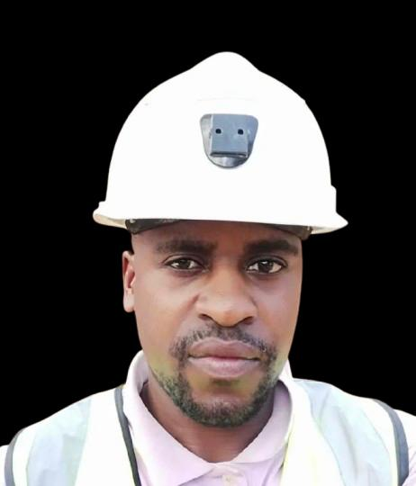

Our Mission
To provide reliable plumbing and construction services built on quality workmanship, offering practical and affordable solutions, and to earn the trust of every customer through professional service.
About Us
A Limpopo plumbing and construction company serving homes and businesses with dependable, quality work since 2014.
Katz Plumbing & Construction was founded in 2014 by Katlego Moloto and is based at 363 Ga-Mamadila, Moletjie, Limpopo. For more than a decade we have served homes and businesses across Limpopo with dependable plumbing and construction work.
Plumbing is where we specialise, and over the years our work has grown to include geyser installation, building, plastering, painting and tiling. That range means many of the jobs around a home or business can be handled by one team.
Customers can expect a professional approach from the first conversation to the finished job: clear communication, careful workmanship and practical advice that keeps quality and cost in balance.
To provide reliable plumbing and construction services built on quality workmanship, offering practical and affordable solutions, and to earn the trust of every customer through professional service.
To become a trusted and recognised plumbing and construction company, growing our reputation while making a positive contribution to the homes and businesses we serve.

Founder & CEO
Katlego Moloto established Katz Plumbing & Construction in 2014 and leads the business as Founder & CEO. He sets the direction of the company and the standard it holds itself to, working with the team to serve homes and businesses across Limpopo.
The principles that guide how we work on every job.
We take care over every detail, from the first fitting to the final finish, so the work looks right and lasts.
When we say we will do something, we do it. Customers should be able to depend on us.
We are honest about what a job needs and what it costs, and we stand behind our word.
We communicate clearly, respect your property and approach every project with a skilled, organised team.
A customer who is happy with the finished work is the best measure of ours.
Explore what we do, or get in touch to discuss the plumbing or construction work you need.